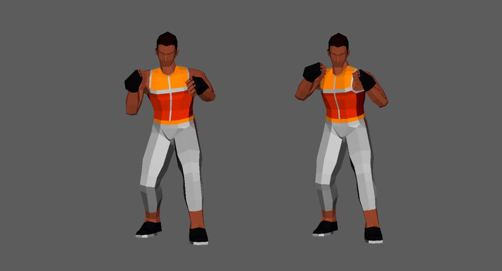

使用ツール
Maya作品紹介
バンダイナムコスタジオ インターンシップ2023冬のアニメーション制作課題で制作した作品です。左足で踏み込んだ後キックを繰り出すときのスピード感や、キックの後右足に体が引っ張られていく動き、最後回転し終わった後に慣性で体が引っ張られる動きなど、自分でローキックを実際にやってみて体感したことをアニメーションで表現できるよう頑張りました。
「キックを繰り出すまでの溜め→膝を伸ばし蹴り上げ」の遷移を素早く(2フレーム程度で)行うことで、左足で踏み込んだ後キックを繰り出すときのスピード感を演出しました。
蹴り上げた後、腰の回転に追従するように上半身を回転させることで、体の重心が右足に移っていく様子を表現しました。

回転の後、元の姿勢に戻る前に少し余分に回転させることで回転の際にかかる慣性力を表現しました。